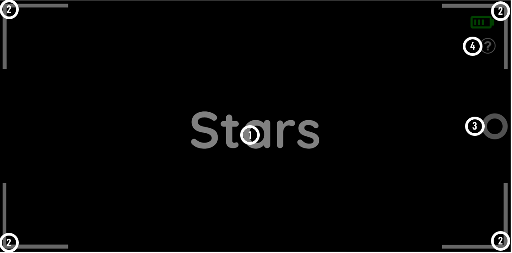
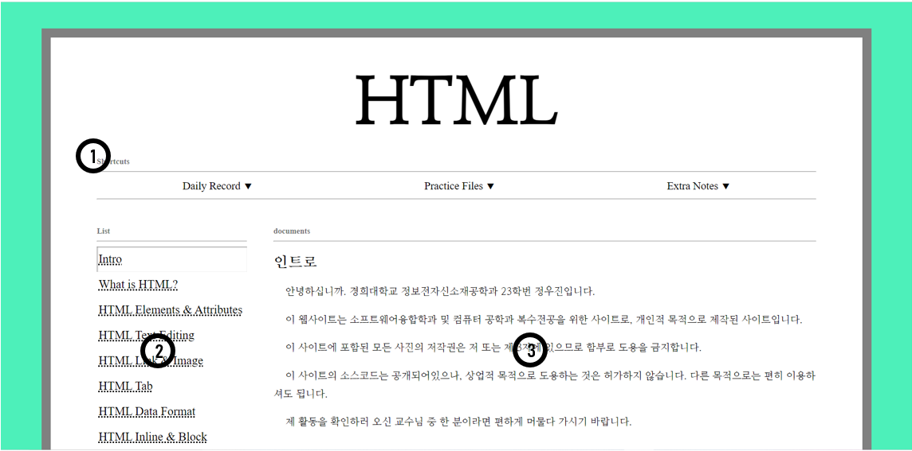

documents
HELP
•초기화면
밤하늘을 찍는 카메라를 본따 만들어 보았습니다.

- 마우스를 위에 올리면 사라집니다. 클릭하면 무작위 위치에 별이 생성됩니다. (초기화면에서만)
- 각 꼭짓점에 있는 화살표를 눌러 특정 배경으로 변경할 수 있습니다. 왼쪽 위부터 시계반대 방향으로 HTML, CSS, Pygame, Javascript입니다.
- 화면 우측에 있는 버튼을 누르면 해당 배경에 해당하는 문서로 이동할 수 있습니다. 기본값은 제 Github로 입니다.
- 이 도움말 페이지 입니다.
Pygame문서는 아직 존재하지 않습니다.
•문서화면
최대한 심플하게 만들어 보았습니다.

- 내비게이션 바 입니다. 해당 페이지 및 북마크로 바로 이동할 수 있습니다.(24/03/03 기준 미완성)
- 일지 항목입니다. 주제별로 묶어놓았습니다.
- 일지 내용입니다.
Update Log
•02/17
V1
1. 메인 화면 및 네 가지 페이지 (메인화면: Github, 네 가지 페이지: HTML, CSS, Javascript, Pygame)제작, 각 페이지를 카메라 꼭짓점에 할당 2. 카메라를 본따서 메인화면 제작, Stars를 누르면 별이 나오도록 설정 3. 캡쳐 버튼을 누르면 화면 배경에 표시된 페이지로 이동하도록 설정
•02/18
V2
- 캡쳐 버튼 누르면 자동으로 초기화면으로 되돌아 오도록 설정. 단, 리셋 버튼이 main.html을 다시 로드하는 방식으로 초기화하도록 만들지 않음. (Javascript실력 향상을 위해 일부러 그렇게 만듦.)
- 배경이 HTML, CSS, Javascript, Pygame으로 변경되면 제목도 마찬가지로 Stars 대신 각각 HTML, CSS, Javascript, Pygame으로 바뀌도록 설정.
- 만약 Stars에서 별을 만든 상태로 HTML 및 다른 세가지 배경으로 바꾸면 별이 사라지도록 설정. 리셋하고 Stars로 돌아오면 다시 별이 나오도록 설정.
•02/19
V3
- Javascript 코드 수정(코드 간략화, 스파게티 코드라 여겨지는 것들 수정, 주석 설정)
- 쓸데없는 이미지 파일 제거
- Javascript strict mode로 설정
- 성능 저하를 코드 부분적 수정.
•02/20
V4
- Canvas로 메인화면 디자인을 바꾸려고 했으나 js파일이 html 파일보다 먼저 실행되는 바람에 canvas element를 가져오지 못하는 문제가 발생했다. <script> element를 body 뒤로 이동하여 해결함.
- HTMLpractice6를 보면 결국 실패했다. 다만 해당 방식 말고 다른 방식으로 우선 만들어 보려고 한다. canvascontrol이라는 문서를 만들어 두었다.
- 그 전에 canvas를 연습하면서 실력이 좀 늘었는지 기존 코드에 수정할 수 있는 부분이 좀 보여서 수정했다.
- list control에서 초기값을 설정해 주지 않아 처음 페이지가 로드되었을 때 Intro에 문서 전체가 표시되는 오류가 발생했다. setSwitchDocument();를 추가하여 수정했다.
- .setAttribute("style","value")와 .style="value" 가 차이가 없어 뭐가 나은지 찾아봤더니 후자가 조금 더 빠르다고 한다. 물론 요즘 컴퓨터의 성능상 큰 차이는 없겠지만 class처럼 setAttribute를 쓰지 않고서는 설정이 불가능 한 것들 빼고는 변경했다.
•02/24
V5
우선 HTML넣음으로써 1차적으로 완성이 되었다.
각 페이지의 내비게이션 바 라든지 수정할 부분이 많지만 차후 수정하겠다.
•03/03
V6
•HELP페이지 추가
•각 페이지 내비게이션 바 추가